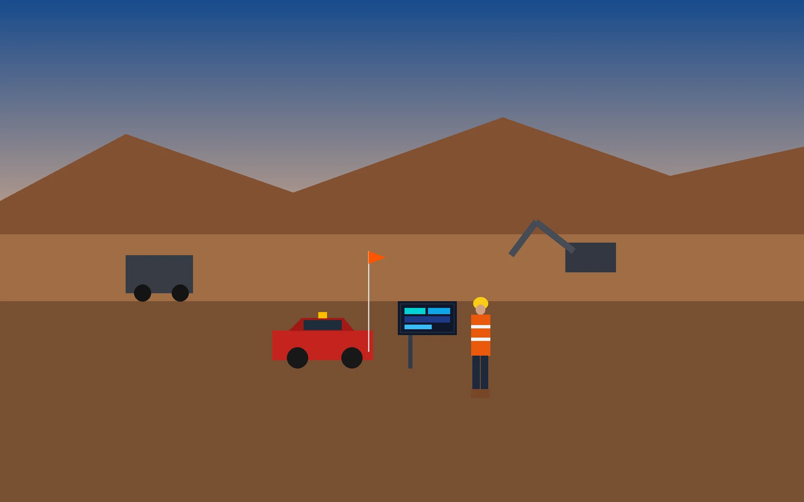
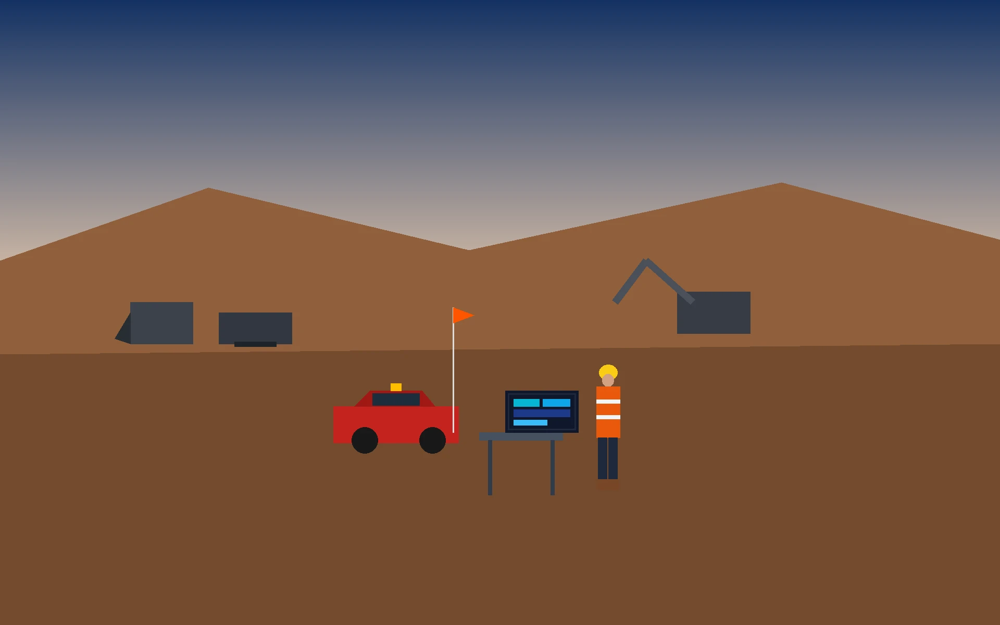
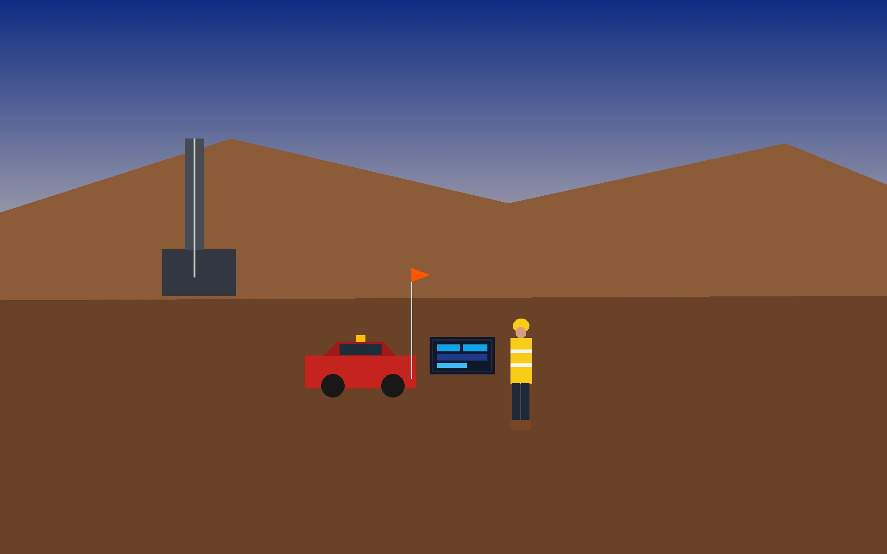
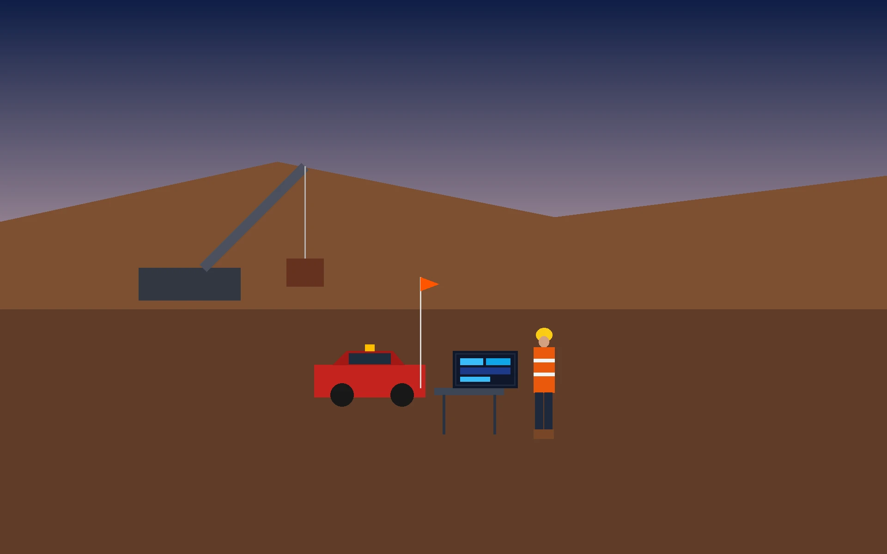
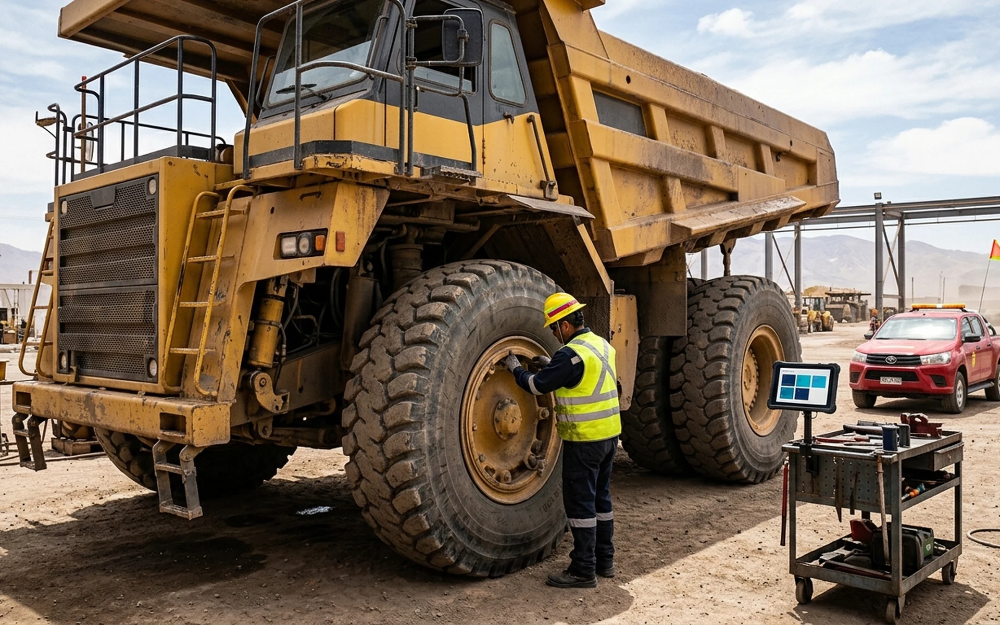
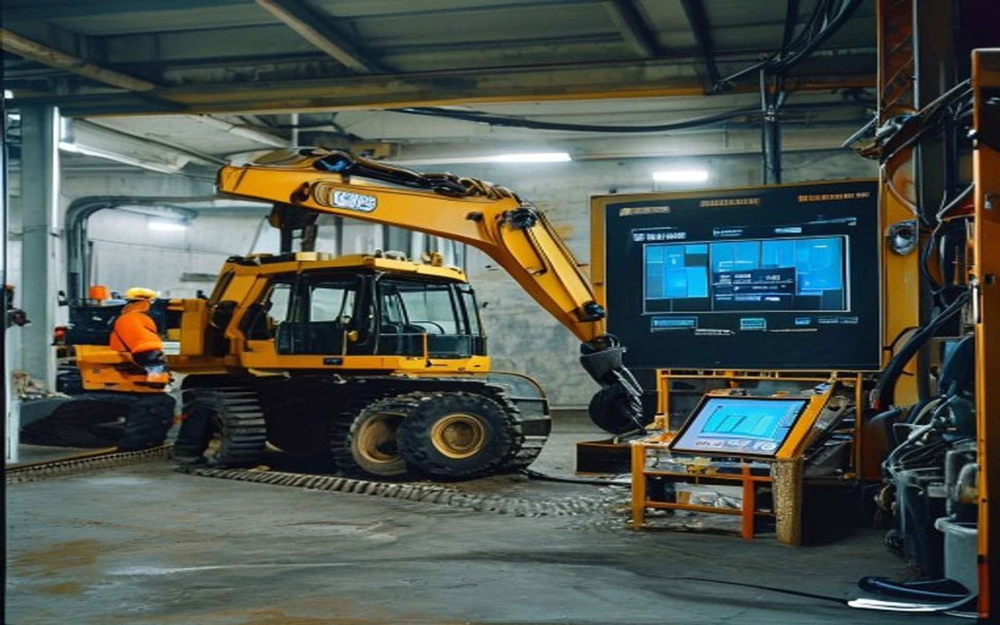

Variante V1 · Alto Tonelaje & Control de Flota
eam-mining-hero-v1.webp
Original Completo (16:10)

Reorientación visual de BaseLogic EAM para el sector minero chileno y empresas contratistas (movimiento de tierra, perforación, izaje y mantenimiento de activos críticos). V1–V4 están rechazadas formalmente; V5–V6 permanecen pendientes de QA y no cuentan con aprobación.
6 variantes horizontales 16:10 con vistas responsive 4:5 y 1:1
Variante V1 · Alto Tonelaje & Control de Flota

Variante V2 · Contratista Movimiento de Tierra

Variante V3 · Drilling & Perforación

Variante V4 · Grúas, Izaje & Mantenimiento

Variante V5 · Ingreso pendiente de QA formal

Variante V6 · Ingreso pendiente de QA formal
